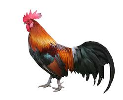
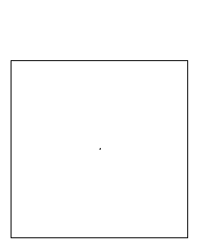
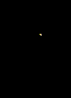
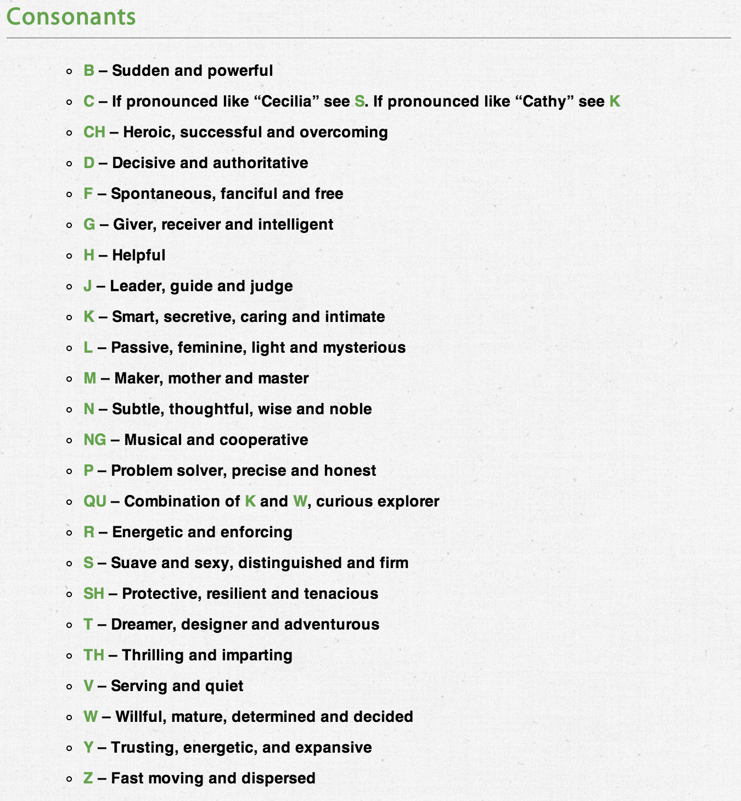
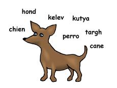

## What do you say to a Llama that loves picnicking? Alpaca lunch. --- ### This presentation is available (now) at: [http://www.savethevowels.org/talks](http://www.savethevowels.org/talks) --- <table> <tr> <td><img src=phonmedia/koalas.png></td> <td><img src=img/koala.jpg></td> </tr> </table> ## Sound and Meaning Will Styler - Semantics --- # The Classical View --- ### Non-arbitrary signs *The sign is causally linked to the signfied* Smoke indicates fire <!-- .element: class="fragment" --> Bleeding indicates injury <!-- .element: class="fragment" --> Will's presence indicates crappy puns <!-- .element: class="fragment" --> --- ### Iconic (or representational) signs *A referential abstraction from the signified* # ☂ ☃ ☀ <!-- .element: class="fragment" --> Some hand gestures <!-- .element: class="fragment" --> <img class="big" src="img/emoji.png"> <!-- .element: class="fragment" --> --- <img class="big" src="img/curve.jpg"> --- ### Arbitrary Signs *Referential only by agreement and widespread knowledge* Non-representational symbols (♄) <!-- .element: class="fragment" --> <img class="tiny" src="img/stop.jpg"> <!-- .element: class="fragment" --> Non-iconic gestures <!-- .element: class="fragment" --> * ... and, most importantly... --- # Language! --- ### We're kind of committed to that idea > "Language - A System of Arbitrary Signs" <!-- .element: class="fragment" --> (from Finegan's [Language: Its Structure and Use](http://www.amazon.com/Language-Its-Structure-Edward-Finegan/dp/0495900419)) <!-- .element: class="fragment" --> --- ### (Most) language is based on sound --- <table> <tr> <td><img src=phonmedia/koalas.png></td> <td style="vertical-align:middle"><img src=img/koala.jpg></td> </tr> </table> * ###The connection between sound and meaning is arbitrary! --- <img class="big" src="img/orly.jpg"> --- # Phonosemantics --- ### Phonosemantics *The study of and search for non-arbitary meanings in speech sounds* --- ### How can sound have non-arbitrary meaning? Iconicity <!-- .element: class="fragment" --> Analogy <!-- .element: class="fragment" --> Emergent groupings <!-- .element: class="fragment" --> Sounds really mean something <!-- .element: class="fragment" --> --- ## Meaning by Iconicity --- ### "Sound Effects" * "Boom!" * "Pew pew pew!" * "Vroom vroom!" * Sound effects can be arbitrary, too! * (c.f. Rimshot, Sad Trombone) --- ## Onomatopoeia --- ### Onomatopoeia *Words which, when spoken, sound kind of like the things they represent* * (See also the idea of an [Ideophone](http://en.wikipedia.org/wiki/Ideophone)) --- ### Onomatopoetic Words in English Gurgle <!-- .element: class="fragment" --> Woof <!-- .element: class="fragment" --> Snip <!-- .element: class="fragment" --> Whoosh <!-- .element: class="fragment" --> Tweet <!-- .element: class="fragment" --> --- --- ### <danger>What's your favorite onomatopoetic word?</danger> --- ### Onomatopoeia differs across languages ---  --- ### A rooster says... cock-a-doodle-doo (English) <!-- .element: class="fragment" --> kukko kiekuu (Finnish) <!-- .element: class="fragment" --> chicchirichí (Italian) <!-- .element: class="fragment" --> kuklooku (Urdu) <!-- .element: class="fragment" --> kukuriku (Hungarian) <!-- .element: class="fragment" --> Sourced from [this awesome site](http://www.eleceng.adelaide.edu.au/personal/dabbott/animal.html) <!-- .element: class="fragment" --> --- (So, different languages can't even map sounds onto sounds uniformly) --- Sometimes, the meaning comes from *how* you say it --- ## Suprasegmental Changes *The changes you can make to a pronunciation without changing the sequence of phonemes used.* --- ### Types of Suprasegmental Changes Pitch of the voice <!-- .element: class="fragment" --> Duration of sounds/words <!-- .element: class="fragment" --> Voicing type (Breathy, Creaky) <!-- .element: class="fragment" --> Articulatory Setting <!-- .element: class="fragment" --> **How could we use each of these to express iconic meaning?** <!-- .element: class="fragment" --> --- ... but meaning doesn't have to come from iconicity at all! --- # Meaning by Analogy --- ### Phonological Analogy *Mental links between words which sound similar to each other in some way* "Meaning by association/spreading activation" <!-- .element: class="fragment" --> Most relevant to neologisms <!-- .element: class="fragment" --> Sometimes morphologically analyzable <!-- .element: class="fragment" --> --- ## Meaning-by-analogy is *everywhere* --- <section data-background="img/hogwarts.jpg"> </section> --- ### Analogy at Hogwarts Slytherin House <!-- .element: class="fragment" --> Severus Snape <!-- .element: class="fragment" --> Luna Lovegood <!-- .element: class="fragment" --> Voldemort <!-- .element: class="fragment" --> --- ### Analogy in PR Crises Altria <!-- .element: class="fragment" --> <small>(Formerly Philip Morris)</small> <!-- .element: class="fragment" --> Academi <!-- .element: class="fragment" --> <small>(Formerly Blackwater)</small> <!-- .element: class="fragment" --> Xfinity <!-- .element: class="fragment" --> <small>(Formerly Comcast)</small> <!-- .element: class="fragment" --> VALIC <!-- .element: class="fragment" --> <small>(Spun off from AIG)</small> <!-- .element: class="fragment" --> --- ### Analogy in Antidepressants Elavil <!-- .element: class="fragment" --> Surmontil <!-- .element: class="fragment" --> Zoloft <!-- .element: class="fragment" --> Paxil <!-- .element: class="fragment" --> Wellbutrin <!-- .element: class="fragment" --> --- ### Analogy in Cosmetics * Re-Nutriv * Eternicils * Amplicils * Orchidee imperiale * lol --- ### Analogy in other products Volkswagen Jetta <!-- .element: class="fragment" --> Febreze <!-- .element: class="fragment" --> Rogaine <!-- .element: class="fragment" --> --- ## ... but sometimes, whole groups of words sound alike --- # Meaning by Emergent Groupings (Phonaesthemes) --- ## An Experiment --- ### "Would you like to buy a new Glimp? It..." a) Sharpens knives. b) Lights up your house. c) Tastes good. --- ### "Damnit, I left my meb in the car!" a) I won't be able to sew as well. b) I'll be unable to fill my bird feeders c) What if there's a fire?! --- ### "Have you seen my snofter?..." a) My nose is sore. b) I dropped a glass. c) It's cold in here. --- ### "I got diabetes. It must be from drinking all that..." a) Blurge cola b) Murple cola c) Slize cola --- ### "You Mom is plafty." a) "Them's fighting words." b) "Maybe?" c) "Thanks!" --- ### "Your Mom is slafty." a) "Them's fighting words." b) "Maybe?" c) "Thanks!" --- ### Phonaesthemes *"Frequently recurring sound-meaning pairings that are not clearly contrastive morphemes"* (definition from [Bergen 2004](http://muse.jhu.edu/login?auth=0&type=summary&url=/journals/language/v080/80.2bergen.pdf)) <!-- .element: class="fragment" --> --- ### Phonaesthemes in English gl- ‘light, vision’ *glimmer, glisten, glitter, gleam, glow, glint*, etc. <!-- .element: class="fragment" --> sn- ‘nose, mouth’ *snore, snack, snout, snarl, snort, sniff, sneeze*, etc. <!-- .element: class="fragment" --> sl - 'pejorative', *slack, slouch, sludge, slime, slash, sloppy, slug, sluggard, slattern, slut, slang, sly, slither, slow, sloth*, etc. <!-- .element: class="fragment" --> b_l - 'expand abnormally', *blimp, bulge, bulk, balloon, blip* <!-- .element: class="fragment" --> --- ### Phonaesthemes aren't morphemes! in- *'inedible', 'inconceivable', 'indelible', 'incorrect'* is a morpheme, not a phonaestheme! <!-- .element: class="fragment" --> --- ## If they're not morphemes, what are they? --- ### Emergence *Complex systems and patterns which arise through simple interactions* <!-- .element: class="fragment" --> --- ### Langton's Ant At a white square, turn 90° right, flip the color of the square, move forward one unit At a black square, turn 90° left, flip the color of the square, move forward one unit  <!-- .element: class="fragment" --> ---   --- ### Emergence is useful in language --- ### It could account for phonological phenomena * Bug -> Bugs * Tug -> Tugs * Rug -> Rugs * Wug -> ??? * Note that there's no "rule" here --- ### It could account for constructions in Syntax * She cut her way through the jungle * She fought her way through the orcs * She bribed her way through the Senate * She resected her way through the abdominal cavity. * Construction Grammar is an emergent flavor of syntax. --- ### It could account for phonaesthemes! <!-- .element: class="fragment" --> --- ### How could phonaesthemes emerge?  <!-- .element: class="fragment" --> --- ## How real are phonaesthemes? --- ### Bergen 2004 [Bergen 2004](http://muse.jhu.edu/login?auth=0&type=summary&url=/journals/language/v080/80.2bergen.pdf) tested this by playing pairs of words which were: <!-- .element: class="fragment" --> Phonaesthemes (glitter:glow) <!-- .element: class="fragment" --> Similar sounding (druid:drip) <!-- .element: class="fragment" --> Similar meaning (cord:rope) <!-- .element: class="fragment" --> Similar sound/meaning, but not a group (crony:crook) <!-- .element: class="fragment" --> Baseline (frill:barn) <!-- .element: class="fragment" --> --- ### How real are phonaesthemes? Reaction times were faster after a phonaestheme than after any other condition! <!-- .element: class="fragment" --> > These results very clearly indicate that targets are responded to much more quickly when they share a phonaestheme with their prime than when they share form, meaning, both, or nothing with it. <!-- .element: class="fragment" --> So, they sure act real... <!-- .element: class="fragment" --> --- ## Phonaesthemes in language They can attract new members (drag, flag, lag, and *sacke* -> "sag") <!-- .element: class="fragment" --> [According to Keith McCune](http://books.google.com/books/about/The_internal_structure_of_Indonesian_roo.html?id=8kwHAQAAIAAJ), most Indonesian language words have phonosemantic components. <!-- .element: class="fragment" --> Japanese has a rich system of phonosemantics (according to [this guy](http://www.lib.kobe-u.ac.jp/infolib/meta_pub/G0000003gakui_D1004724)) <!-- .element: class="fragment" --> --- ### ... but all of these deal with relations between words. ## Do sounds themselves actually have meanings? <!-- .element: class="fragment" --> --- # The Meaning of Sounds --- ## There are two sides to this coin: Psuedoscience "sound meanings" <!-- .element: class="fragment" --> Actual cognitive phenomena <!-- .element: class="fragment" --> --- ### Sound Symbolism Silliness ["Sound Symbolism and your Business Name"](http://www.brandroot.com/resources/item/11-sound-symbolism-and-your-business-name) --- <img src="img/symbolismvowels.png"> ---  --- <img class="big" src="img/dudewaitwhat.jpg"> --- ### "Sound symbolism" in product naming "BlackBerry" (Fast segments, nicely timed) <!-- .element: class="fragment" --> "Dasani" (CVCVCV, simple syllables) <!-- .element: class="fragment" --> "Swiffer" (Psuedo-phonestheme, onomatopoetic) <!-- .element: class="fragment" --> People pay [Lexicon Branding](http://www.lexiconbranding.com) lots of money to do this. <!-- .element: class="fragment" --> LOL <!-- .element: class="fragment" --> --- ### There are some real phenomena... --- ## An experiment! ---  <h1 style="float: left;padding-left: 170px">Kiki</h1> <!-- .element: class="fragment" --> <h1 style="float: right;padding-right: 150px">Bouba</h1> <!-- .element: class="fragment" --> --- ### The Bouba/Kiki Effect First observed on Tenerife (in Spanish) by Wolfgang Köhler in 1929. There, it was "Takete" vs. "Baluba". <!-- .element: class="fragment" --> Repeated with US and Tamil Undergrads by V.S. Ramachandran and Edward Hubbard. [95% labeled them as expected](http://cbc.ucsd.edu/pdf/Synaesthesia%20-%20JCS.pdf). <!-- .element: class="fragment" --> [2.5 year old kids show a Bouba/Kiki effect too!](http://psych.mcmaster.ca/maurerlab/Publications/Maurer_bouba.pdf) <!-- .element: class="fragment" --> --- ### Why Kiki and Bouba? Perhaps it's mouth-shape related (high vowels vs. lower vowels? Lip rounding?) <!-- .element: class="fragment" --> Perhaps direct sensory integration. <!-- .element: class="fragment" --> [Autistic Children do not show a Bouba/Kiki effect](http://www.tandfonline.com/doi/abs/10.1080/17470910701563681) <!-- .element: class="fragment" --> But it's clearly more complicated than the marketers think. <!-- .element: class="fragment" --> --- # Problems with Phonosemantics ---  --- ### Phonosemantic Problem #1 * Neologisms (new words) aren't uniform. ---  --- ### Phonosemantic Problem #2 * Different languages use different sounds to describe the same meaning. --- ## If these effects exist, they're not that strong. --- # So, do sounds have meaning? --- ### Words and speech can have iconic meaning Onomatopoeia <!-- .element: class="fragment" --> Iconic Suprasegmentals <!-- .element: class="fragment" --> --- ### Words can pick up meaning from near neighbors Similar sounding words can prime meanings <!-- .element: class="fragment" --> Spreading activation of meaning <!-- .element: class="fragment" --> --- ### Groups of words can sound alike Phonaesthemes are groups of semantically and phonologically related words. <!-- .element: class="fragment" --> Phonaesthemes emerge from lexical statistics <!-- .element: class="fragment" --> Words with phonaesthemes will inherit the meaning of the group. <!-- .element: class="fragment" --> --- ### Sounds can have meaning  <!-- .element: class="fragment" --> --- ### ... but not nearly as often as the marketers wish! One concept, many words <!-- .element: class="fragment" --> It's most certainly not deterministic <!-- .element: class="fragment" --> These effects are the exception, not the rule. <!-- .element: class="fragment" --> --- ### So, sounds have meaning, but... <img style="height:auto; width:auto; max-width:900px; max-height:900px;" src="img/proceedwithcaution.png"> <!-- .element: class="fragment" --> --- ### Other phonosemantics resources [Margo's Magical Letter Page](http://www.trismegistos.com/MagicalLetterPage/) --- <huge>Thank you!</huge> Will Styler - will@savethevowels.org http://savethevowels.org/talks/ ---